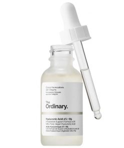

The Ordinary Hyaluronic Acid 2% + B5

Giá tiền: 223.000đ
Công dụng của The Ordinary Hyaluronic Acid 2% + B5
Giúp da đủ độ ẩm, tránh tình trạng bị mất nước, ngăn ngừa lão hóa da
Làm dịu và phục hồi, giúp da trở nên căng mọng, mềm mại, tăng độ đàn hồi
Kích thích sản sinh Collagen để tăng độ đàn hồi của da
Bảo vệ, tăng cường sự phát triển của biểu bì
Nâng cao chất lượng của các sợi Elastin và Collagen
Thành phần :
Aqua (Nước), Natri Hyaluronate, Pentylene Glycol, Propanediol, Sodium Hyaluronate Crosspolymer, Panthenol, Chiết xuất Ahnfeltia Concinna, Glycerin, Trisodium Ethylenediamine Disuccinate, Citric Acid, Isoceteth-20, Ethoxydiglycol, Ethylhexylglycerin, Hexylene Glycene Glycol 1,2 , Caprylyl Glycol.
Hướng dẫn sử dụng
Sau khi rửa mặt sạch và toner, nhỏ 2-3 giọt tinh chất ra tay và vỗ nhẹ lên da, rồi sử dụng các bước dưỡng da tiếp theo
Sử dụng sản phẩm ngày 1-2 lần trước kem dưỡng ẩm